Candidate List 20260729Last night — ZTF: 1,242 passed basic cuts (61 young) · LSST: 0 passed basic cuts (0 young)Previous Day Next Day
Section 1: New Sources (age<1d) Section 2: Old (1-5d) sources observed last nightplaceholder
Section 1: New Afterglow/FBOT Cands Last Night (1)
1. [ZTF] ZTF26abklwfq (Afterglow?) [Back to Top] [Share] [Trigger Swift] [Fritz Alert] [Fritz Source] [Lasair]RA, Dec: 295.19974, 14.85624 19h40m47.94s, 14d51m22.46sGalactic (l, b): 51.78283, -3.83799 ext(g-r) = 0.674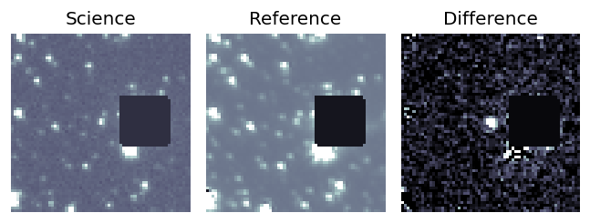
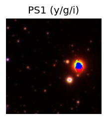
TESS: Sectors [54 81]
PS1: 0 sources in 3 arcsec
LegacySurvey: 0 sources in 3 arcsec
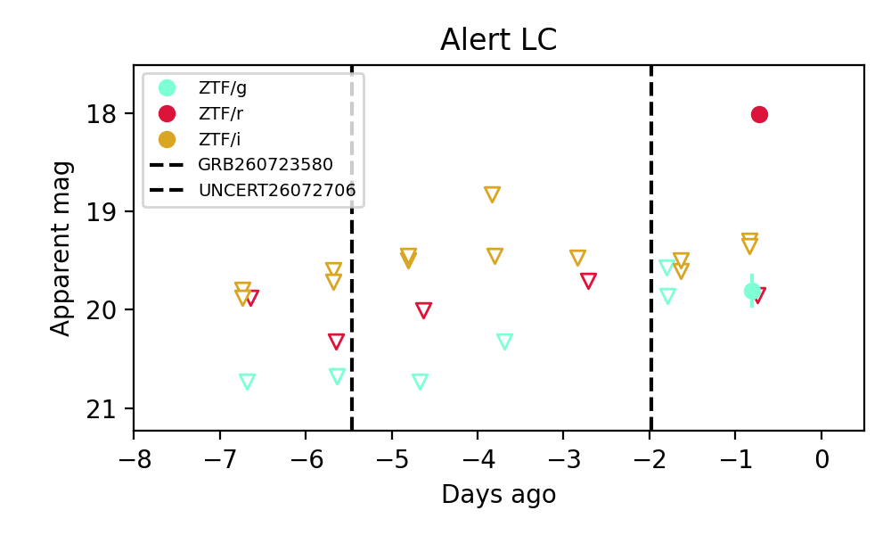
Extinction-corrected gr color:
From alerts: 1.12 +/- 0.18 mag
Extinction-corrected gi color:
From alerts: -0.59 +/- 99 mag
Extinction-corrected ri color:
From alerts: -1.71 +/- 99 mag
Consistent with synchrotron, g-r>0!
Rise Rate:
g: 0.24 mag/day
r: 81.26 mag/day
Fade Rate:
Section 2: Older Sources Observed Last Night (6)
0. [ZTF] ZTF26abjcerp (Afterglow?) [Back to Top] [Share] [Trigger Swift] [Fritz Alert] [Fritz Source] [Lasair]RA, Dec: 290.95399, -0.43753 19h23m48.96s, 0d-26m-15.11sGalactic (l, b): 36.25061, -7.39993 ext(g-r) = 0.355

TESS: Sectors [54 81]
PS1: 0 sources in 3 arcsec
LegacySurvey: 0 sources in 3 arcsec

Extinction-corrected gr color:
From alerts: -0.36 +/- 0.14 mag
Extinction-corrected gi color:
From alerts: -0.24 +/- 0.2 mag
Extinction-corrected ri color:
From alerts: -0.44 +/- 0.09 mag
Rise Rate:
g: 2.53 mag/day
r: 2.25 mag/day
i: 1.75 mag/day
Fade Rate:
g: 0.21 mag/day
r: 0.25 mag/day
i: 0.17 mag/day
1. [ZTF] ZTF26abkkrkp (FBOT?) [Back to Top] [Share] [Trigger Swift] [Fritz Alert] [Fritz Source] [Lasair]RA, Dec: 234.10924, 4.20733 15h36m26.22s, 4d12m26.38sGalactic (l, b): 10.11754, 44.48972 ext(g-r) = 0.055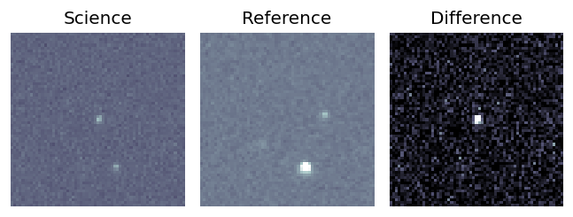
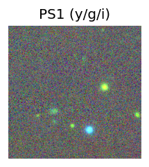
TESS: Sectors [ 51 117]
PS1: 0 sources in 3 arcsec
LegacySurvey: 1 sources in 3 arcsec Closest: d = 1.09 arcsec, 32.6 deg (east of north) photoz=1.04 (68% bounds 0.82, 1.32), type=REX peak abs mag = -25.62 (68% bounds -25.0, -26.26)
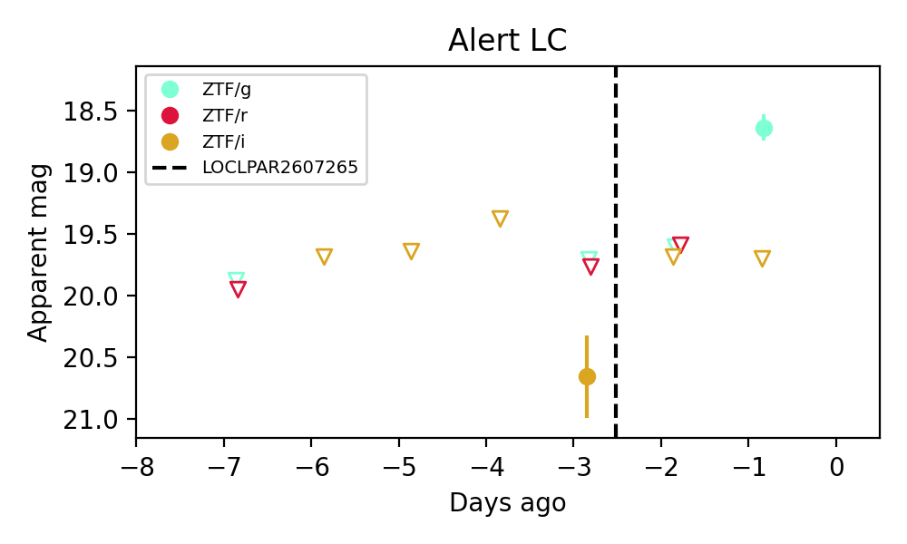
Extinction-corrected gi color:
From alerts: -1.15 +/- 99 mag
Extinction-corrected ri color:
From alerts: -0.92 +/- 99 mag
Rise Rate:
g: 0.95 mag/day
Fade Rate:
2. [ZTF] ZTF26abkksyt (Afterglow?) [Back to Top] [Share] [Trigger Swift] [Fritz Alert] [Fritz Source] [Lasair]RA, Dec: 274.68375, 68.3517 18h18m44.10s, 68d21m6.13sGalactic (l, b): 98.48642, 28.06755 ext(g-r) = 0.045

TESS: Sectors [ 14 15 16 17 19 20 22 23 25 26 40 41 47 49 50 52 53 54
55 56 57 58 59 60 73 74 75 76 77 79 81 82 83 84 85 117
118 119 120 121]
PS1: 0 sources in 3 arcsec
LegacySurvey: 1 sources in 3 arcsec Closest: d = 1.86 arcsec, 317.9 deg (east of north) photoz=0.1 (68% bounds 0.02, 0.2), type=EXP peak abs mag = -18.73 (68% bounds -15.1, -20.41)

Extinction-corrected gr color:
From alerts: -0.14 +/- 0.25 mag
Consistent with synchrotron, g-r>0!
Rise Rate:
g: 1.05 mag/day
r: 0.7 mag/day
Fade Rate:
3. [ZTF] ZTF26abkljkw (Afterglow?) [Back to Top] [Share] [Trigger Swift] [Fritz Alert] [Fritz Source] [Lasair]RA, Dec: 307.39749, 50.71364 20h29m35.40s, 50d42m49.10sGalactic (l, b): 87.47261, 6.82816 ext(g-r) = 0.841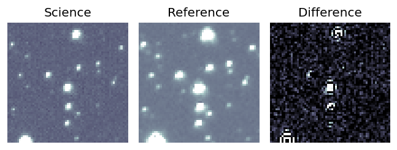
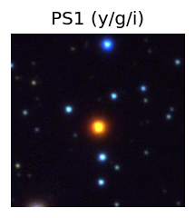
TESS: Sectors [ 14 15 16 41 56 75 76 82 83 120 121]
PS1: 0 sources in 3 arcsec
LegacySurvey: 0 sources in 3 arcsec
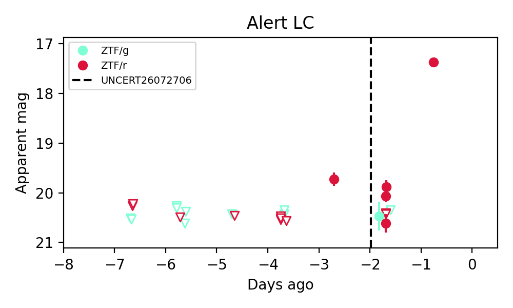
Extinction-corrected gr color:
From alerts: -0.46 +/- 0.3 mag
Rise Rate:
r: 3.29 mag/day
Fade Rate:
r: 0.69 mag/day
4. [ZTF] ZTF26abklkam (Afterglow?) [Back to Top] [Share] [Trigger Swift] [Fritz Alert] [Fritz Source] [Lasair]RA, Dec: 299.82125, 43.26415 19h59m17.10s, 43d15m50.92sGalactic (l, b): 78.35284, 7.09093 ext(g-r) = 0.518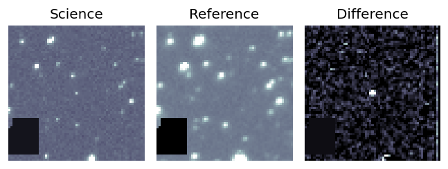
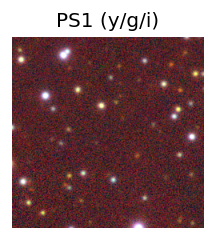
TESS: Sectors [ 14 15 41 54 55 74 75 81 82 120 121]
PS1: 0 sources in 3 arcsec
LegacySurvey: 0 sources in 3 arcsec
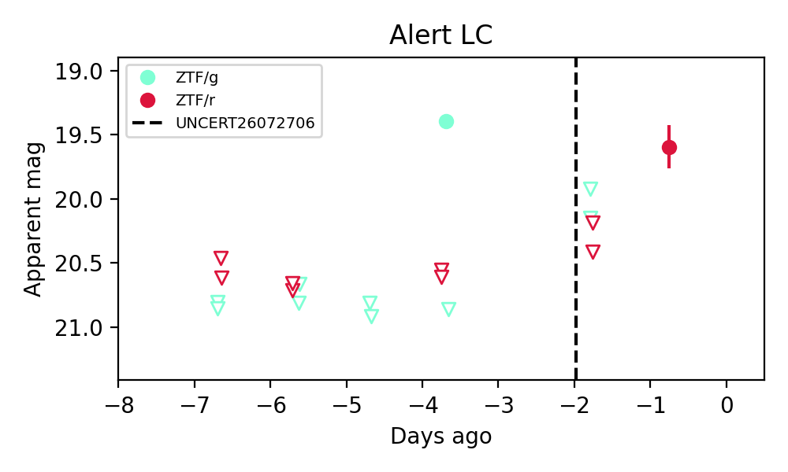
Extinction-corrected gr color:
From alerts: -1.73 +/- 99 mag
Rise Rate:
g: 1.54 mag/day
r: 0.82 mag/day
Fade Rate:
g: 48.56 mag/day
5. [ZTF] ZTF26abklqtx (Afterglow?) [Back to Top] [Share] [Trigger Swift] [Fritz Alert] [Fritz Source] [Lasair]RA, Dec: 320.16356, 57.27776 21h20m39.25s, 57d16m39.95sGalactic (l, b): 97.34902, 5.2817 ext(g-r) = 1.307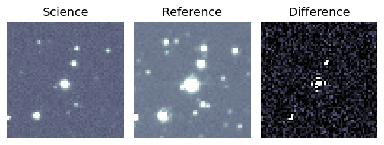
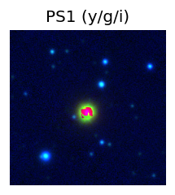
TESS: Sectors [ 15 16 17 56 57 76 77 83 84 121]
PS1: 0 sources in 3 arcsec
LegacySurvey: 0 sources in 3 arcsec
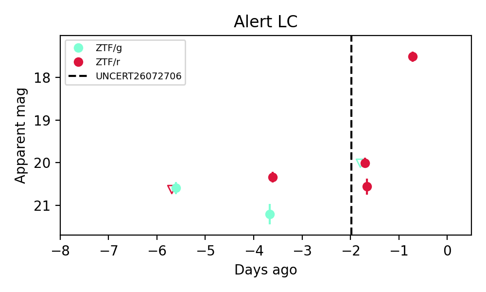
Extinction-corrected gr color:
From alerts: -1.46 +/- 99 mag
Rise Rate:
r: 0.83 mag/day
Fade Rate:
g: 0.31 mag/day